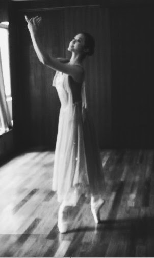
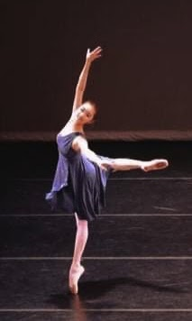
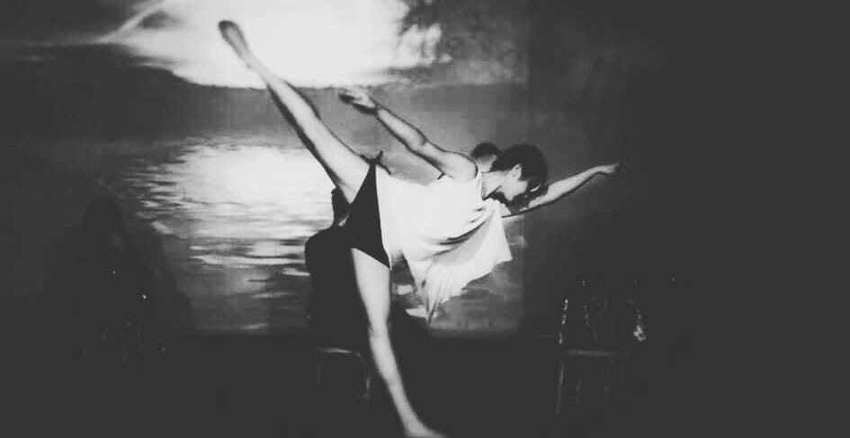
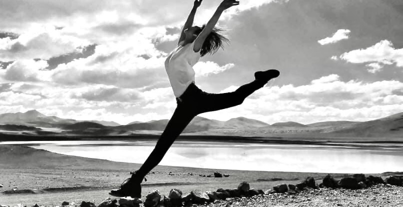
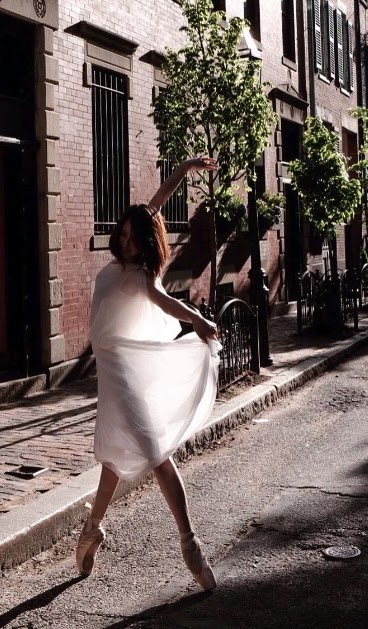
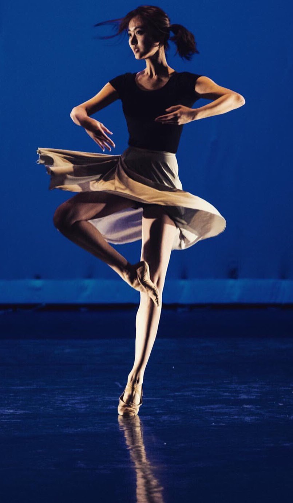

Other
Ballet
Before attending college, I pursued ballet as a semi-professional dancer. I started ballet training at 4. I used to serve as a main dancer at Shenzhen Youth Ballet Troupe for 8 years and received my Ballet Teaching Certificate from Beijing Dance Academy when I was 17.
Currently, I am not affiliated with a specific dance company, but you can often find me at Canada's National Ballet School during the evenings. One of my passions lies in choreography, where I explore a diverse range of styles, including contemporary, traditional, and hip-hop, among others. If you have an interest in collaborating on choreography, I would be delighted to work together.





